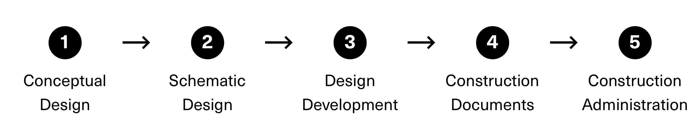
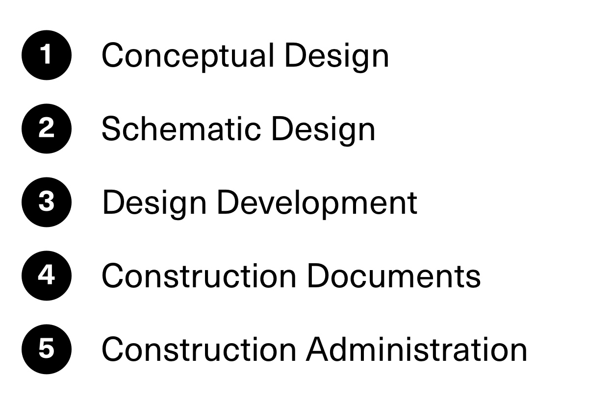

2016-18
Architizer
In 2016 I joined Architizer as Design Lead during a pivotal moment in the company’s trajectory. In the previous 8 years Architizer had become the industry’s go-to portfolio tool both for architects and for architectural product manufacturers. Architizer CEO, Marc Kushner, saw an opportunity to pivot into a marketplace for architectural materials and I jumped at the opportunity to be a part of it. In the U.S. alone, architects are responsible for selecting $97 billion worth of building products each year.
During my time at Architizer our small product team evolved the marketplace through 3 distinct phases (detailed below) resulting in a product that has become a valuable workflow tool, now used by 7 of the 10 largest Architecture firms in the US. My responsibilities included partnering with Director of Product Management, Thomas Tachibana, to define product strategy, leading all research efforts, and managing the design & front-end engineering teams.
Three Product Phases
RFP Model
Architects publish requests. Brands reply with options.
Expert Matching
In-house material experts pair architects with brands.
Self-Service
Architects search directly in the product database.
Phase 1 - RFP Model
Our first iteration of the marketplace used an RFP model. Architects posted specifications for desired products and manufacturers would reply with options. This initial approach was cheap to build and gave us time to research how each party interacted with the system. We were lucky to have office space just below architecture firm HKWN, who become our most eager research subjects. During this initial phase, we uncovered a few interesting insights:
-
#1 - Lag in response time is a major flaw
In most cases it took 24-48 hours for manufacturers to reply with products. This lag time was unacceptable for architects who had other options (sales reps, sample books, peer recommendations) that were more immediate. Furthermore, the lag time was exaggerated if the architect needs to adjust their request based on the responses received.
-
#2 - Architects don’t always know what they’re looking for
From concrete flooring, to glass façade systems, to door handles, there are thousands of products that go into a building and product research is often assigned to junior architects. As visual thinkers architects often have a vision for the product they desire but don’t know the technical terms to describe it.
-
#3 - Architects are coming to Architizer early in the process
All major architectural projects are comprised of 5 distinct phases. We expected that architects would use Architizer during the CD phase (when construction documents are drafted) but we discovered that many architects are doing exploratory material research much earlier in the design development phase. This is good for our commission model, but it means that requests are often vague and suppliers are still months or years away from closing a deal.
 
Request form used by architects
Response form used by manufacturers
Phase 2 - Expert Matching
In response to the learnings in Phase 1, we decided to pilot a white-glove marching service. To do this we hired a team of in-house material experts, who monitored incoming requests from architects and responded with expert recommendations to meet their needs. The strategy behind this approach was threefold…
-
#1 - Decrease match time
By removing our reliance on manufacturer responses, we were able to decrease match time from ~36 hours to ~3 hours. This increased trust in the system by providing predictable results.
-
#2 - Help architects articulate their needs
Our experts could proactively reach out to architects if they submitted a vague search, helping them to articulate their need and ensuring their success.
-
#3 - Expand & enrich our product library
During the process of search fulfillment, expert matchers could upload new products and enrich existing products thus growing the database and paving the way for a self-service search engine.
During this phase our product team built two internal tools for the matching team. The first is a simple workflow tool that allows matchers to triage & prioritize incoming requests, search for products, and publish recommendations. The second is a Chrome extension that allows matchers to introduce new products to the database from external sites.

Internal tool used to make connections

Chrome extension used to capture new products
Phase 3 - Self Service
As the marketplace continued to grow the expert matching service became operationally unsustainable, and there were further gains to be made from a self-service search engine. After months of enrichment by our internal matchers along with engineering initiatives to scrape products from various sources, we now owned the world's largest database of architectural products. The final chapter of this story is about delivering a top-notch search experience for architects and I'll tell that story through two features...
Visual Search
Our research continued to show that architects struggled to describe the products they're looking for in a structured, technical manner that the search engine could understand. One of our breakthrough ideas was to create a visual search interface. Here's how it works: After submitting a string based search, we were able to show images of products that contained similar tags - allowing the architect to refine their search using thumbnails. For example, if an architect searches for "wall sconces" we could return images for the most popular tags related to sconces, e.g. up-lights, down-lights, swing-arms, flush-mount or recessed sconces.

Visual search
Product Context
Architects are legally liable for every product they select, which incentivizes conservative material choices and inhibits inovation in the industry. Another breakthrough idea for our product team was to leverage meta data from our portfolio tool to add additional context to products. For example, showing which reputable firms had used a product or in which project types (commercial, educational, industrial, etc.) the product had be used, allowed us to increase the likelyhood that unfamiliar products would be selected.
Product details view
In 2017, the world's top architecture firms including AECOM, A+I, and Adjaye Associates used Architizer to find $288M worth of building products for 534 buildings in 19 countries.
If you are here because you have an ambitious vision for a new product and need help bringing it to life, say hi.